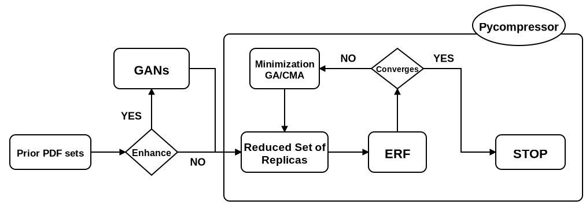
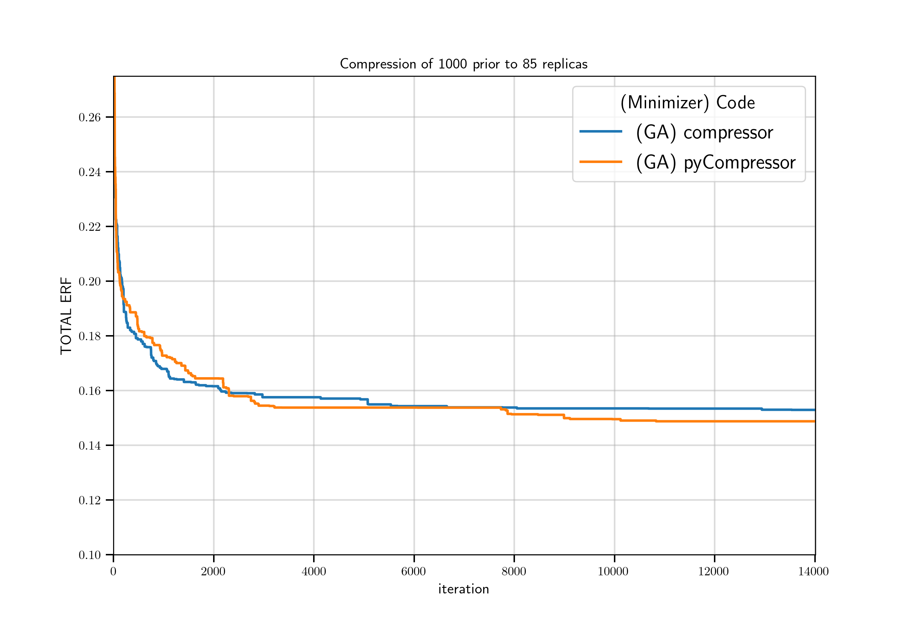

Why pyCompressor?¶
Note
Add the motivations here.
The two new main features of the pyCompressor package compared to the C++ implementation are:
A new minimization algoirthm, Covariance Matrix Adapation Strategy (CMA-ES). In addition to the Genetic Algorithm (GA), there is now the possibility to choose as a minimizer the CMA-ES.
A Generative Adversarial (GANs) Strategy that can be used to enhance the statistices of the prior. This relies on another python package called ganpdfs which is a standalone code based on tensorflow designed specifically to learn the probability distribution of the a prior dataset (PDF replicas) and generate new ones that follow the same distribution.
The new desing flow of the pyCompressor package is schematically described in the following diagram.

The prior Monte Carlo set of replica of size \(\tilde{N}_{\mathrm{rep}}\) is given as input from which a PDF grid of shape \((\tilde{N}_{\mathrm{rep}}, NF, X)\) (where \(NF\) and \(X\) resp. denote the total number of flavors and the size of the \(x\)-grid) is computed. If the choice to enhance the statistics is activated, the prior PDF set goes through the GANs. This will generate a new Monte Carlo PDF set \(\bar{N}_{\mathrm{rep}}\) (with \(\tilde{N}_{\mathrm{rep}} < \bar{N}_{\mathrm{rep}}\)). A subset sample of the PDF replicas (prior or ehancend) with size \(N_{\mathrm{rep}}\) is then extracted in order to compute the Error Function (ERF). The minimization of the ERF is then performed either using the GA or the CMA which can be defined in the input runcard. The minimizer basically tries to find a candidate sample that leads to the smallest value of ERF. Once a convergence is achieved after a given iteration, the agorithm stops and outputs a compressed Monte Carlo set of PDF replicas with size \(\bar{N}\) (with \(N_{\mathrm{rep}} < \tilde{N}_{\mathrm{rep}} < \bar{N}_{\mathrm{rep}}\)).
Benchmarks¶
The following benchmarks agains the C++ code is done without enhancing the statistics of the prior (i.e. truning off the GANs). The input PDF set chosen here is the NNPDF31_nnlo_as_0118_1000 with 1000 replicas. The mahine used for testing is a Ryzen 5 2600 (12 threads) with 16 GB of RAM and a GTX 1060.

As shown below, the performance of the pyCompressor is comparable to the C++ implementation with as slightly faster convergence.
